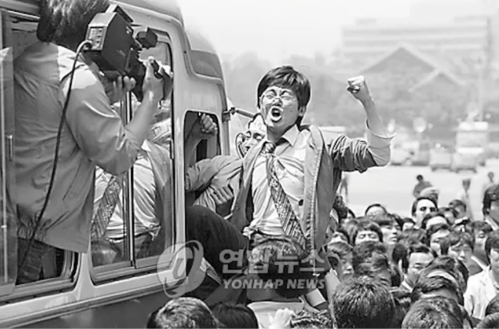
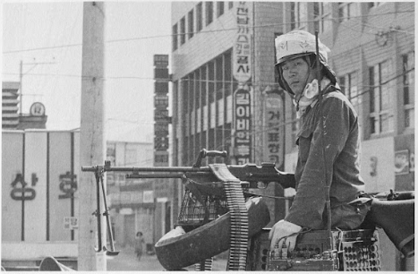
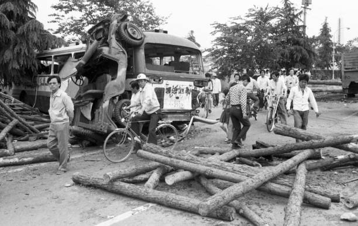
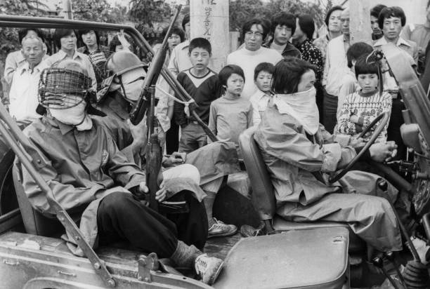
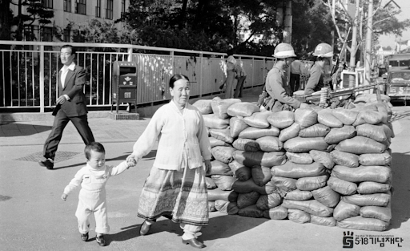
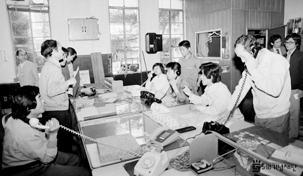
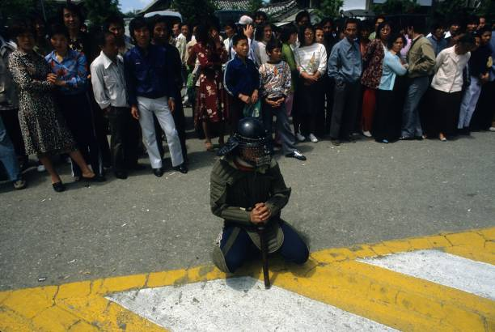
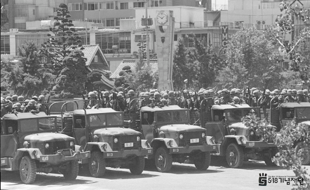
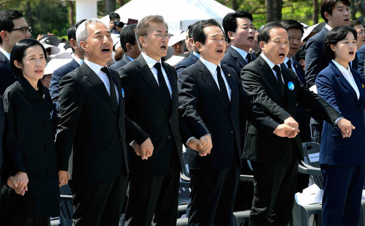

Historique des évènements
Retour sur les moments clés qui ont maqués le soulèvement de Gwangju
Les Prémices
01
Les Prémices
Depuis 1961, la Corée du Sud est sous la dictature de Park Chung-hee, marquée par la répression et la suppression des libertés civiles. En 1979, Park est assassiné, créant une instabilité politique.
18 mai 1980
02
Début du soulèvement
Après l'assassinat du président Park Chung-hee en octobre 1979, le général Chun Doo-hwan prend le pouvoir par un coup d'État militaire en décembre 1979. La loi martiale est étendue dans tout le pays.
19 mai 1980
03
Escalade des tensions
En réponse à la violence militaire, les manifestations s'intensifient. Le nombre de manifestants augmente à plusieurs milliers, incluant des étudiants et des citoyens ordinaires.
20 mai 1980
04
Propagation du soulèvement
Les manifestants commencent à utiliser des pierres, des bouteilles et des cocktails Molotov contre les forces militaires.
21 mai 1980
05
Prise de contrôle de la ville
Face à la résistance intense, les forces de sécurité se retirent de plusieurs zones de la ville. Les manifestants prennent le contrôle des principaux bâtiments et des infrastructures.
22-23 mai 1980
06
Autogestion et résistance
La population de Gwangju montre un soutien massif aux manifestants, fournissant de la nourriture, du sang pour les transfusions, et d'autres formes d'aide. Les comités citoyens continuent de gérer la ville.
24-25 mai 1980
07

Tentatives de négociation
Certains membres du clergé, des universitaires et des citoyens tentent de négocier avec les autorités militaires pour une résolution pacifique. Les manifestants demandent l'abrogation de la loi martiale et la libération des prisonniers politiques.
26 mai 1980
08
Préparation à l'assaut final
Le gouvernement de Chun Doo-hwan envoie un ultimatum aux manifestants, les sommant de se rendre avant minuit. Les manifestants refusent, déterminés à continuer leur lutte.
27 mai 1980
09
Répression et fin du soulèvement
Aux premières heures du 27 mai, les troupes d'élite de l'armée sud-coréenne lancent une offensive majeure contre les positions des manifestants. L'assaut est brutal et rapide.
Après le soulèvement
10
Après le soulèvement
Le gouvernement mène une répression sévère contre les dissidents et quiconque est suspecté d'avoir participé au soulèvement. La censure des médias est renforcée pour contrôler les informations sur les événements de Gwangju.
- Les Prémices
- 18 mai 1980
- 19 mai 1980
- 20 mai 1980
- 21 mai 1980
- 22-23 mai 1980
- 24-25 mai 1980
- 26 mai 1980
- 27 mai 1980
- Après le soulèvement

Les étudiants de Gwangju s’organisent
Les étudiants de Gwangju s’organisent pour protester contre ces mesures et l'arrestation de Kim Dae-jung, un leader démocratique. Le 18 mai 1980, qui marque le premier jour du soulèvement, les forces militaires répriment brutalement les manifestations, déclenchant une réaction massive de la population. Résultat, les habitants de Gwangju soutiennent les étudiants, amplifiant la révolte. Ces facteurs combinés ont conduit à l'éclatement du soulèvement de Gwangju comme nous le connaissons maintenant.
Les prémices du soulèvement
Plusieurs éléments ont amené au soulèvement de Gwangju.
Depuis 1961, la Corée du Sud est sous la dictature de Park Chung-hee, marquée par la répression et la suppression des libertés civiles. En 1979, Park est assassiné, créant une instabilité politique. Par la suite, en décembre 1979, le général Chun Doo-hwan prend le pouvoir par un coup d'État militaire. Puis, en mai 1980, Chun Doo-hwan étend la loi martiale, ferme les universités, interdit les rassemblements et arrête les leaders de l'opposition.
A Gwangju, 200 étudiants se rassemblent pour protester pacifiquement.
En réponse à la fermeture de l'Université Chonnam, environ 200 étudiants se rassemblent pour protester pacifiquement contre la fermeture de leur université et l'arrestation de Kim Dae-jung, un leader pro-démocratie influent. Les forces spéciales (les parachutistes de la 7e division) interviennent brutalement, utilisant des matraques et des gaz lacrymogènes pour disperser la foule. De nombreux étudiants sont battus et arrêtés, provoquant une indignation généralisée parmi les habitants.
Début du soulèvement
Après l'assassinat du président Park Chung-hee en octobre 1979, le général Chun Doo-hwan prend le pouvoir par un coup d'État militaire en décembre 1979. La loi martiale est étendue dans tout le pays. Sous la loi martiale étendue, les tensions politiques et sociales sont élevées. Le général Chun Doo-hwan, ayant consolidé son pouvoir, impose des mesures strictes, y compris la fermeture des universités.
Violences accrues
Les affrontements entre les manifestants et les forces de sécurité s'intensifient. Les soldats tirent à balles réelles, tuant et blessant plusieurs manifestants. Les violences de l'armée galvanisent encore plus les protestations.
Manifestations plus grandes
En réponse à la violence militaire, les manifestations s'intensifient. Le nombre de manifestants augmente à plusieurs milliers, incluant des étudiants et des citoyens ordinaires.
Les slogans appellent à la fin de la loi martiale et à la démission de Chun Doo-hwan.
Prise d'armes.
Les manifestants parviennent à s'emparer de véhicules militaires et d'armes légères, intensifiant la résistance. Les bâtiments gouvernementaux et les postes de police sont attaqués et incendiés.
Le nombre de morts et de blessés augmente considérablement. Les hôpitaux sont débordés et manquent de ressources pour traiter tous les blessés.
Affrontements violents
Les manifestants commencent à utiliser des pierres, des bouteilles et des cocktails Molotov contre les forces militaires. Les scènes de violence se multiplient dans toute la ville.
Comités citoyens.
Des comités d'autogestion se forment pour organiser la défense de la ville, distribuer des vivres et maintenir l'ordre. La solidarité parmi les habitants est forte.
Des tirs de l'armée tuent de nombreux manifestants, exacerbant encore plus la colère de la population.
Retraite des forces de sécurité
Face à la résistance intense, les forces de sécurité se retirent de plusieurs zones de la ville. Les manifestants prennent le contrôle des principaux bâtiments et des infrastructures.
Communication.
Les manifestants utilisent des stations de radio locales pour diffuser des informations et appeler à l'aide extérieure. Cependant, les communications sont souvent brouillées par le gouvernement.
Soutien populaire
La population de Gwangju montre un soutien massif aux manifestants, fournissant de la nourriture, du sang pour les transfusions, et d'autres formes d'aide. Les comités citoyens continuent de gérer la ville.
Maintien de l'ordre
Malgré les tentatives de négociation, les comités citoyens continuent de gérer la ville et de préparer la défense en cas de nouvel assaut militaire.
Discussions
Certains membres du clergé, des universitaires et des citoyens tentent de négocier avec les autorités militaires pour une résolution pacifique.
Les manifestants demandent l'abrogation de la loi martiale et la libération des prisonniers politiques.
Préparation militaire
Les forces militaires se regroupent autour de Gwangju, prêtes à lancer une attaque massive pour reprendre la ville.
Ultimatum
Le gouvernement de Chun Doo-hwan envoie un ultimatum aux manifestants, les sommant de se rendre avant minuit. Les manifestants refusent, déterminés à continuer leur lutte.
De Nombreuses Victimes
Le bilan est lourd : des centaines de manifestants sont tués ou blessés. Des centaines d'autres sont arrêtés. Ont parle également de viols, agressions et tortures sexuelles infligés par les militaires.
Assaut final
Aux premières heures du 27 mai, les troupes d'élite de l'armée sud-coréenne lancent une offensive majeure contre les positions des manifestants. L'assaut est brutal et rapide.
Les troupes militaires utilisent des véhicules blindés et des armes lourdes. Des combats acharnés ont lieu, mais les manifestants sont rapidement submergés par la supériorité militaire.

Conséquences politiques
Le soulèvement de Gwangju devient un symbole puissant de la résistance contre l'autoritarisme en Corée du Sud. En 1987, la pression populaire mènera finalement à des réformes démocratiques. En 1997, le président Kim Dae-jung, ancien prisonnier politique, déclarera le 18 mai comme jour de commémoration nationale.
Le soulèvement de Gwangju est aujourd'hui commémoré comme un moment clé dans la lutte pour la démocratie et les droits civiques en Corée du Sud et bien que le bilan soit lourd, il est vu aujourd'hui comme un symbole général d'espoir dans la lutte pour les libertés humaines.
La répression continue
Le gouvernement mène une répression sévère contre les dissidents et quiconque est suspecté d'avoir participé au soulèvement. La censure des médias est renforcée pour contrôler les informations sur les événements de Gwangju.